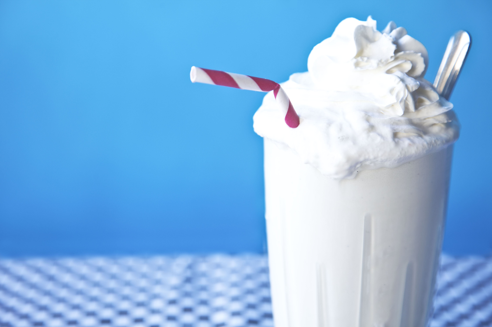
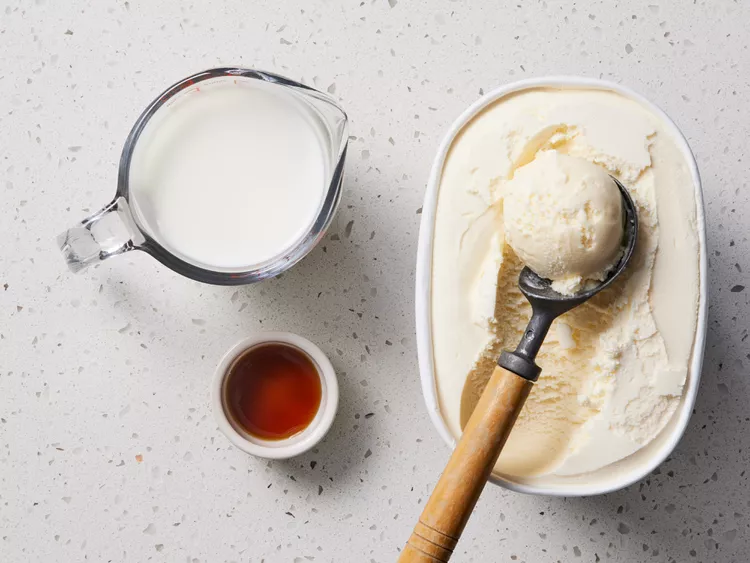
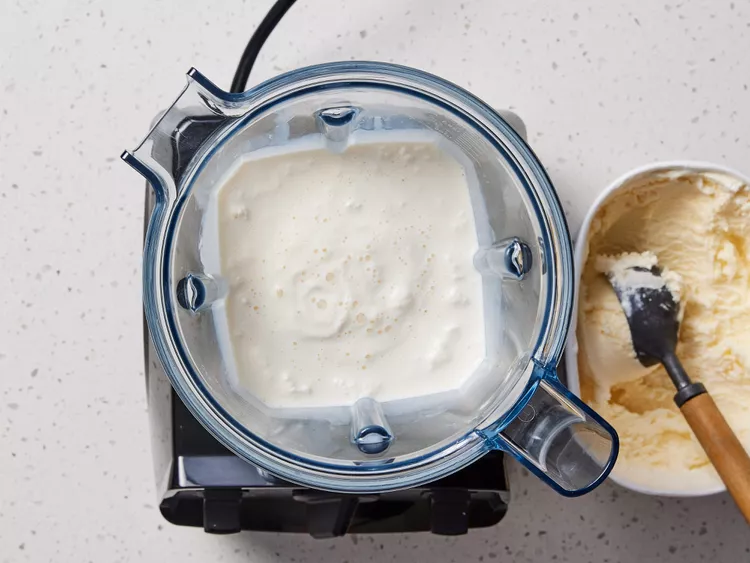
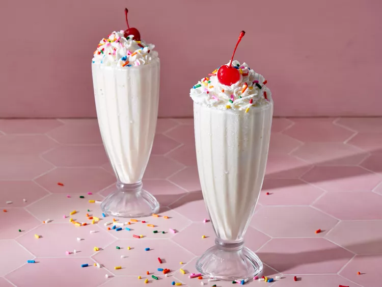

Vanilla reigns supreme due to its elegant simplicity, offering a pure, unadulterated taste that serves as the perfect canvas for the creamy, rich base of a high-quality milkshake. Its subtly sweet and aromatic profile, derived from real vanilla beans, provides a sophisticated flavor that is universally cherished and rarely polarizing, unlike more complex or intense options. This timeless appeal ensures consistent satisfaction, transcending fleeting trends and demographic preferences. It’s comforting, nostalgic, and refreshingly smooth, providing an unmatched balance that is neither overwhelmingly sugary nor artificial. The flavor harmonizes perfectly with the inherent cool, velvety texture of a frozen dessert, allowing the quality of the milk and ice cream to shine through without distraction. While chocolate or strawberry might be occasional delights, vanilla is the reliable, classic masterpiece, a simple pleasure executed flawlessly every time. It is the epitome of milkshake perfection through its understated elegance and broad appeal, cementing its status as the unparalleled best.


